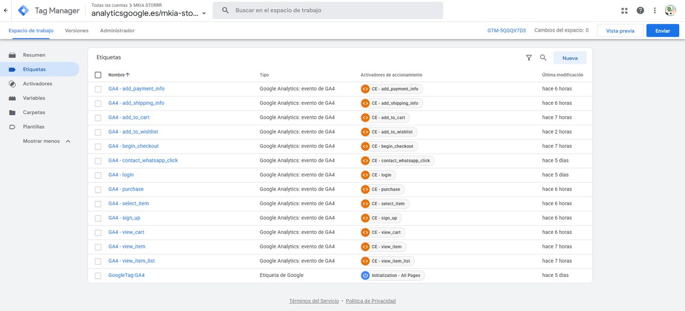
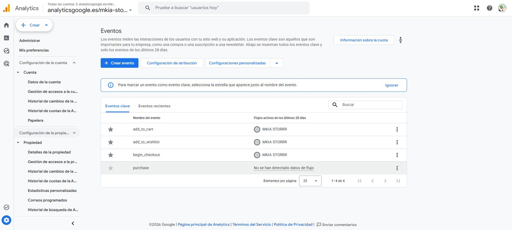
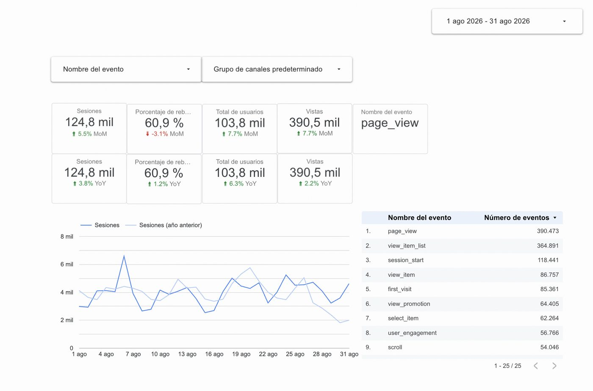

Proyecto final del Módulo 6 del máster (INESDI). Un equipo de seis hicimos de agencia para un cliente simulado: diseñamos el plan de medición, lo implementamos en producción, verificamos que los datos llegaban y construimos el dashboard.
Ver la presentación final del equipo →
MKIA STORRR vende ediciones limitadas que se agotan y reaparecen en lanzamientos futuros. Con ese modelo, vender más de golpe es fácil de medir pero no es lo que mueve el negocio: lo que importa es que el mismo comprador vuelva en el siguiente drop.
Seis KPIs: tasa de clientes recurrentes, frecuencia de compra, CLV, porcentaje de sesiones recurrentes, apertura de email y clic de email. Para el embudo de fidelización, tres eventos propios que cuentan una historia de intención, identificación e interacción: add_to_wishlist → login → whatsapp_click.
Construí el contenedor con una nomenclatura consistente (CE - evento para activadores, GA4 - evento para etiquetas, DLV - parámetro para variables) y lo auditamos en modo Preview antes de publicar la versión v2.0. La auditoría encontró cuatro problemas:
ecommerce estándar de GA4 y habrían enviado undefined. Se detectaron en Preview y se corrigieron antes de publicar.contact_whatsapp_click nunca coincidía con el whatsapp_click real de la web: esa etiqueta no se habría disparado jamás.checkout.html no carga GTM. No podíamos arreglarlo porque no tocamos el código del cliente, así que lo documentamos y lo reportamos.
Que algo aparezca configurado no basta. Navegamos la web en producción, sin Preview, y confirmamos que 10 de los 13 eventos llegaban con datos reales. Marcamos tres Key Events con flujo activo: add_to_cart, add_to_wishlist y begin_checkout.
purchase no está marcado como Key Event. Su payload es correcto en DebugView (transaction_id, currency, items), pero no tiene datos reales por el bug de checkout.html. Un Key Event con cero conversiones reales es peor que no tenerlo: parece que mentimos.
purchase figura sin datos de flujo.Preparamos el dashboard en Looker Studio en dos versiones con el mismo diseño de KPIs: una conectada a nuestra propiedad (con poco volumen, esperable recién publicada la implementación) y otra a la cuenta demo pública de Google Merchandise Store, con volumen real, tal como pedía el enunciado.
Con los datos demo: los usuarios recurrentes son el 5,5 % de los usuarios activos y el 14,9 % de las sesiones, pero generan el 50,3 % de los ingresos. Cada sesión recurrente vale 5,5 veces más que una nueva, y cada usuario recurrente 17,6 veces más.

purchase queda sin verificar en producción hasta que el cliente corrija checkout.html.